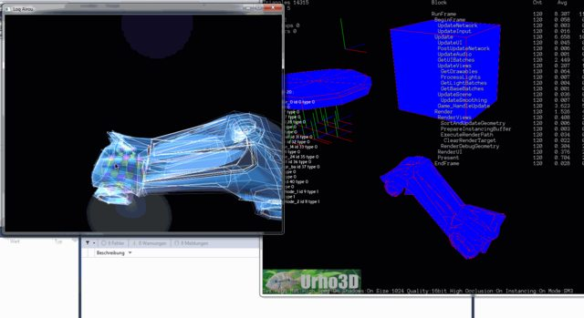

hey,
i found this network protocol a few month ago and loved the idea of sharing 3D data in real-time ^^
some information :
http://www.quelsolaar.com/verse/index.html
http://www.gamepipeline.org/
[spoiler][video]
https://www.youtube.com/watch?v=DPIA2g8T6Hw[/video]
[video]
https://www.youtube.com/watch?v=f90R2taD1WQ#t=539[/video]
and a C# implementation :
http://code.google.com/p/versesharp/
[/spoiler]
and Verse 2.0 is also in development … but i could not compile it on windows so …
http://verse.github.io/
there are also some pugins for blender and 3d studio max and gimp but i didnt test them.
You can download Eskil Steenberg’s dev tools (3d Modeler … ) on his side
http://www.quelsolaar.com/love/index.html
.
They are free and with source code!
here is a gif how my implementation is working with urho3d
 the geometry is displayed with the debug renderer.
the geometry is displayed with the debug renderer.
